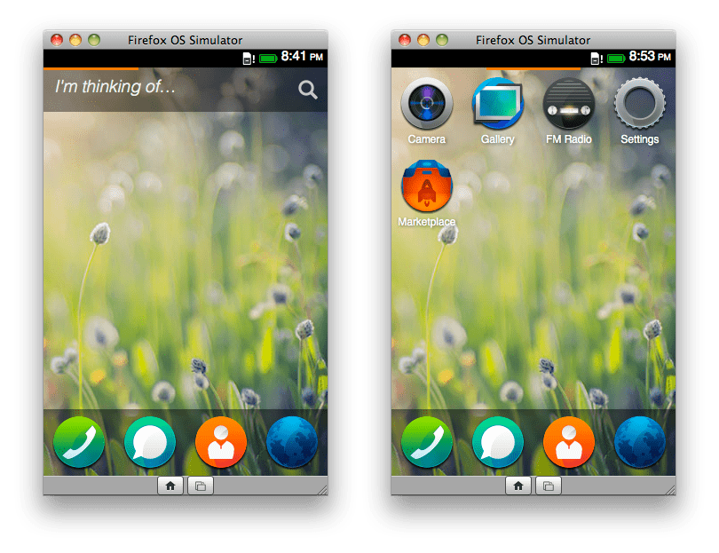

This page describes the Firefox OS Simulator for developers targeting Firefox OS 1.2 or later. If you're developing apps for Firefox OS 1.1, you should check out the documentation for the Firefox OS 1.1 Simulator instead.
The Firefox OS Simulator is a version of the higher layers of Firefox OS that simulates a Firefox OS device, but runs on the desktop. This means that in many cases, you don't need a real device to test and debug your app. It runs in a window the same size as a Firefox OS device, includes the Firefox OS user interface and built-in apps, and simulates many of the Firefox OS device APIs.
The Simulator is packaged and distributed as a Firefox add-on. Once you've downloaded it and installed it in Firefox, you can run it, push apps to it, and attach the developer tools to it using the App Manager tool, and currently in Nightly/Aurora, the WebIDE.
To install the simulator, use WebIDE's Manage Simulators pane (available as part of Firefox 33 and onwards). Multiple versions are available, and you are advised to install them all, for maximum flexibility.
To start the Simulator, you choose it from WebIDE's runtime list. For more details, see the instructions in the WebIDE documentation. Once the Simulator is running, you can push apps to it and debug them using the WebIDE, just as you can with a real device.
If you are using the App Manager (an older tool available prior to the WebIDE), you can install a simulator via the following button:
The Simulator appears as a separate window, sized so the simulated screen area is 320x480 pixels. To simulate touch events you can click the mouse button and drag while holding the button down. So by clicking and dragging right-to-left from the Home Screen, you'll see the built-in apps, as well as any apps you have added:

The Simulator has two buttons in a toolbar at the bottom:
Note that the Firefox OS Simulator isn't a perfect simulation.
Apart from screen size, the Simulator does not simulate the hardware limitations of a Firefox OS device such as available memory or CPU speed.
The following codecs depend on hardware-accelerated decoding and are therefore not yet supported:
This means it isn't possible to use the Simulator to test video playback in apps and on websites like YouTube that rely on these codecs.
Certain APIs that work on the device won't work on the Simulator, generally because the supporting hardware is not available on the desktop. We've implemented simulations for some APIs such as geolocation, and expect to add more in future releases. However, at the moment the following APIs are not supported. Using them might throw errors or just return incorrect results:
If you have a question, try asking us on the dev-developer-tools mailing list or on #devtools on irc.mozilla.org.
You can see messages logged from your app in the Web Console, which you can attach to your app using the WebIDE. If you want to catch early messages happening during app startup, before the console gets connected and working, you can enable verbose logging in the Simulator.
Visit about:config and create a new preference. The preference name is different for each version of the Simulator:
Set it to the string value "all", and disable, then re-enable, the add-on in the Add-on Manager. Now extra messages about the Simulator's operation will appear in the Browser Console.